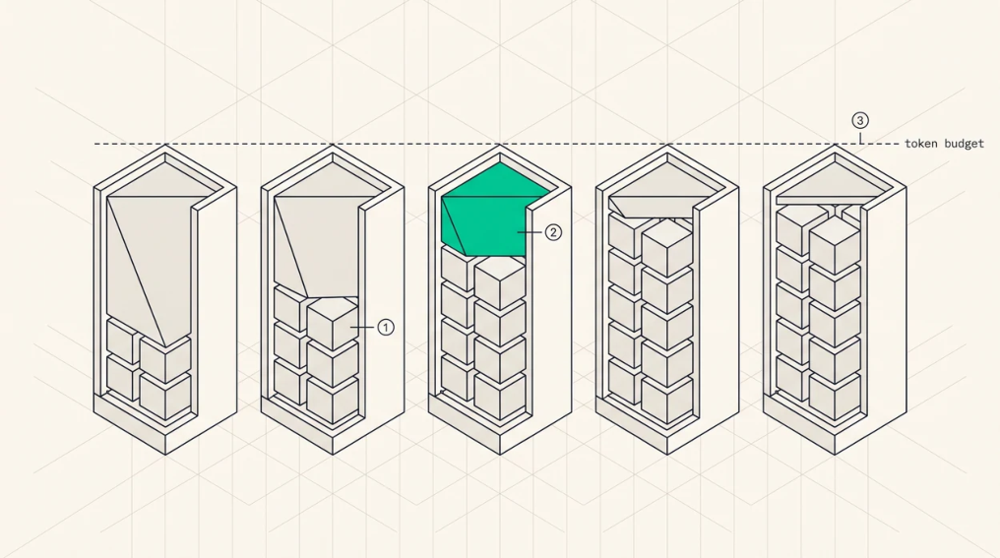

Chunked Prefill
The interference problem
Prefill is compute-bound and long-running, decode is memory-bound and short, and running a 2,000token prefill as its own iteration delays every running sequence’s next token by the whole prefill, tens of milliseconds.
The user-visible effect is that streaming output stutters whenever somebody else’s request starts, and it shows up in the metrics as a bimodal inter-token latency distribution, mostly fine and occasionally terrible. Which is worse than uniformly mediocre, because it’s the tail that people remember.
The tension underneath is real. Prefill is required to start new requests and it blocks decode for existing ones.
Chunked prefill
Split the prompt into pieces and process one per iteration alongside decode.
iteration 1: decode all running + prefill tokens[0..C]
iteration 2: decode all running + prefill tokens[C..2C]
...
iteration N: decode all running + prefill tokens[(N-1)C..L]
→ the new request joins the decode setEvery iteration costs decode plus a bounded amount of prefill, so inter-token latency stays roughly constant instead of alternating between 2 ms and 50 ms.
The modern formulation isn’t “chunk size” but token budget , where an iteration processes at most max_num_batched_tokens in total. Running sequences claim one each and prefill fills the remainder, which adapts automatically, since a big decode batch leaves little room for prefill and a small one leaves plenty. That’s why the budget rather than the chunk size is the parameter engines expose, and typical values sit in the low thousands, with larger budgets favouring prefill throughput and TTFT while smaller ones favour decode latency.

O
1Each running sequence contributes exactly one decode token per iteration.O
2Prefill fills whatever is left under the ceiling, so a long prompt is consumed across several iterations instead of blocking everyone at once.O
3The budget is the control knob, not the chunk size, because the split adapts by itself. A large decode batch leaves little room and a small one leaves plenty.O
4Holding per-iteration work constant is what makes inter-token latency predictable, and predictable is what users actually perceive.
Dynamic SplitFuse
DeepSpeed-FastGen’s Dynamic SplitFuse is the adaptive form of the same idea, composing each batch to hit a target token count by splitting long prompts across iterations and fusing short ones together, so per-iteration work, and therefore per-iteration time, stays nearly constant. Constant iteration time is the property that actually delivers predictable TPOT.
What it costs
The benefit is tail latency, since decode continues at every iteration and P99 inter-token latency approaches the mean instead of being set by the longest prefill in flight. The costs are real and worth stating.
Prefill efficiency drops, because a 2,000-token prefill as one GEMM has better arithmetic intensity than eight 256-token GEMMs, and small chunks push prefill toward the memory-bound regime it was supposed to avoid.
Attention gets recomputed against a growing cache, since chunk k attends to all previously prefilled tokens of the same sequence, so total attention work is unchanged while being split across more iterations with more kernel launches.
And TTFT rises for the request being chunked, whose prefill now spans N iterations that also serve everyone else. Chunked prefill trades one request’s TTFT for everyone else’s TPOT, usually a good trade and occasionally not, which is why priority-aware engines will run a high-priority request’s prefill unchunked.
Memory implications
Chunked prefill needs incremental KV growth, since after each chunk the sequence’s cache has grown and the allocator has to supply blocks on demand. Natural with paged KV, impossible without it.
It also bounds activation memory, which is the underappreciated benefit at very long context. Prefilling a million tokens in one pass needs activations for a million tokens, prefilling in 32K chunks needs activations for 32K, a reduction of over 96%. At million-token context, chunked prefill stops being a latency optimisation and becomes the only way the prefill fits in memory at all.
Key Concept
Chunked prefill stops a long prompt stalling every running sequence, converting a bimodal inter-token latency distribution into a tight one. The modern control is a per-iteration token budget rather than a fixed chunk size, so the split between prefill and decode adapts to the current batch. The costs are lower prefill arithmetic intensity and higher TTFT for the chunked request, and at very long context it also bounds activation memory, which makes it mandatory rather than optional.
Exercises
With a 2,000-token prompt, a 2 ms decode step, and prefill at 20,000 tokens/s, compute per-iteration time and the new request’s TTFT for unchunked prefill and for budgets of 512, 2,048, and 8,192 tokens. Plot TTFT against the running sequences’ P99 TPOT.
Explain why chunked prefill doesn’t reduce total attention work for the prefilling sequence, and quantify the extra launch overhead at chunk size 256 for a 94-layer model.
Build: add a token budget to your scheduler simulator, sweep it, and plot the TTFT/TPOT frontier. Identify the budget that maximises goodput for a given SLO pair.